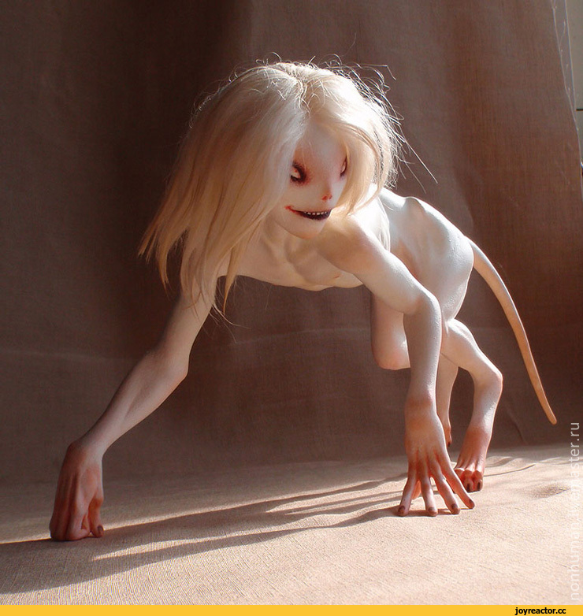
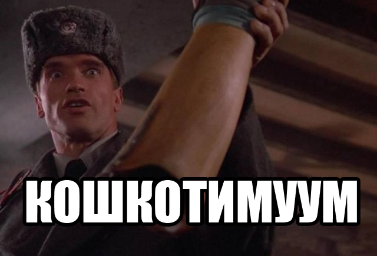

Юля-рут, разработка
7 дней лета :: Руты :: Юленька ака ЮВАО
Страница 13 из 17 •  1 ... 8 ... 12, 13, 14, 15, 16, 17
1 ... 8 ... 12, 13, 14, 15, 16, 17

Re: Юля-рут, разработка
автор Ленивый бегун в Пн 27 Июл 2015 - 16:55
В связи с этим считаю, что руки у меня несколько развязаны и, пожалуй, тоже солью - небольшой кусочек кода из гуд-ветки шестого дня.
В принципе, желающие-умеющие могут его попробовать запустить в игре, убрав ссылки на sfx_tu95_bear_high и d6_nuke_hell
- uvao-d6-true-good-nuke.rpy:
- Код:
label alt_day6_uvao_nuke:
window hide
$ renpy.pause(1)
scene bg ext_house_of_mt_sunset with dissolve2
window show
stop sound_loop fadeout 7
stop music fadeout 5
"Высунув голову из кустов, я опасливо осмотрелся по сторонам. Никого."
"С облегчением вздохнув, я снова, как и вчера, устроился в шезлонге."
"Тем временем в небе разгорался роскошный закатный пожар, яростное буйство красок, такое же недолговечное, как и настоящее пламя."
"Я лежал, любуясь великолепным зрелищем, и наслаждался покоем. Веки мои становились всё тяжелее…"
stop ambience fadeout 2
window hide
scene bg ext_house_of_mt_night with dissolve2
play ambience ambience_camp_center_night fadein 3
$ persistent.sprite_time = "night"
$ night_time()
window show
"Но тут моё уединение было бесцеремонно нарушено."
show mt angry pioneer at cleft with dissolve
play music music_list["always_ready"] fadein 3
mt "Семён!!! Ты теперь каждый день будешь по вечерам в этом шезлонге валяться?"
mt "Ну погоди, доберусь я до тебя!"
stop music fadeout 3
hide mt with dissolve
"Возмущённая вожатая скрылась внутри домика."
th "Доберётся она до меня, как же! Руки теперь коротки!"
"Я поёрзал, устраиваясь в шезлонге поудобнее и закинул руки за голову."
$ renpy.music.set_volume(0.3, delay=0, channel='sound_loop')
play sound_loop sfx_tu95_bear_high fadein 5
"Моё внимание привлекла ярко блеснувшая на фоне темнеющего востока искорка самолёта. Он летел высоко-высоко, выше облаков, оставляя за собой тонкую ниточку инверсионного следа."
th "Интересно, а ведь я здесь за эти несколько дней ни одного самолёта не видел."
"Лениво подумал я. С другой стороны - ну не видел и не видел.{w} Не пролегают здесь регулярные маршруты - ну и ладно. Меньше шума."
"Солнце уже почти село за горизонт и лагерь тихо погружался в сумерки. Лишь редкие облака над головой по-прежнему были, словно светом красного прожектора, освещены солнцем."
$ renpy.music.set_volume(0.7, delay=5, channel='sound_loop')
"Самолёт тем временем всё тянул и тянул в сторону заката, оказавшись уже почти в самом зените. Воздух наполнило становящееся всё громче басовитое урчание, неожиданно громкое для такой большой высоты."
show mt normal pioneer far at cleft with dissolve
"Из домика деловито вышла Ольга Дмитриевна."
$ renpy.music.set_volume(1.0, delay=5, channel='sound_loop')
mt "Семён, хватит валяться! Марш умываться и спать! Отбой уже скоро."
"Она задрала голову. Гул двигателей теперь, наверное, было слышно уже и внутри домика."
show mt surprise pioneer with dissolve
mt "Откуда здесь самолёт?!"
"Судя по её изумлённому тону, почему-то она, в отличие от меня, никак не ожидала увидеть здесь самолёт, пусть и случайный."
"В этот момент в вышине неба что-то изменилось. Позади самолёта, быстро отставая, затрепетал кажущийся крошечным отсюда язычок пламени. Хотя нет, просто какой-то ярко блестящий в солнечных лучах предмет…"
"Покосившись на вожатую я заметил, что она так и стоит, неудобно запрокинув голову и напряжённо вглядываясь в небо."
"Через несколько секунд нечто, отделившеся от самолёта и теперь уже окончательно от него отставшее, начало вдруг расти в размерах.{w} Всё больше, больше…"
"Наконец я понял, что это большой парашют… нет, даже связка из трёх больших… огромных парашютов, кажущихся багровыми в лучах заката."
"Не меняя курса, самолёт всё с той же кажущейся неторопливостью отправился догонять совсем уже ушедшее за горизонт солнце."
$ renpy.music.set_volume(0.5, delay=10, channel='sound_loop')
"На глазах небо менялось. От прежнего пурпура не осталось и следа, облака подёрнулись пеплом, и вечер готовился по-южному быстро уступить место ночи."
show mt fear pioneer with dissolve
"Рядом вдруг охнула Ольга.{w} Посмотрев на неё, я разглядел, несмотря на сгустившиеся сумерки, выражение откровенного ужаса на её лице."
"Встретив мой взгляд, она попыталась что-то сказать, но лишь мучительно всхлипнула."
me "Ольга… Ольга Дмитриевна, что случилось?! Что с Вами?"
"Не отвечая, она лишь отчаянно замотала головой.{w} Наконец она с трудом выдавила из себя:"
show mt cry pioneer with dissolve
mt "Не могу… Не могу поверить…{w=1.0} Здесь же… Как они…"
"Не договорив, она спрятала лицо в ладонях."
$ renpy.music.set_volume(0.2, delay=10, channel='sound_loop')
"Ничего не понимая, я заворочался, пытаясь вылезти из шезлонга. Это движение словно подтолкнуло её."
hide mt with dissolve
"Бросив на меня странный взгляд, Ольга вдруг бросилась бежать, не разбирая дороги, куда-то в сторону столовой."
play sound sfx_tree_branches
"Через несколько треск ломаемых ветвей затих и наступила тишина, разбавляемая лишь быстро слабеющим гудением самолёта."
th "Куда это ей так приспичило?"
dreamgirl "Да уж наверное не в столовую.{w} В спортзал она побежала. Может и успеет ещё. Минут пять у неё есть, наверное."
"Внутренний голос прозвучал как-то очень спокойно и немного устало."
th "Подожди, ты что-то понимаешь в происходящем? Что-то знаешь?"
"Ответ Шизы был всё таким же непривычно спокойным:"
dreamgirl "Ну и бестолковый же ты. Я ведь знаю ровно то же, что и ты, не больше и не меньше."
dreamgirl "Ну напряги память, постарайся. Ты же совсем недавно от скуки читал статью на рукипедии.{w} Самолёт с характерным очень громким гулом, турбовинтовой… Натовцы ещё его \"медведем\" прозвали…"
"В глазах потемнело и я упал обратно в шезлонг."
dreamgirl "Ну вот, теперь и ты всё понял."
"Обливаясь холодным потом, я забарахтался, пытаясь встать."
dreamgirl "Да не суетись ты. Даже сумей ты добежать до того бункера под старым корпусом, всё равно тебе это мало помогло бы."
dreamgirl "Так что не парься. Вожатая-то быстро всё поняла и побежала прощаться.{w} А тебе и бежать не к кому, не соблаговолил обзавестись."
"Отстранённо-равнодушный голос помог мне справиться с обезумевшим от животного ужаса телом. Заставив себя откинуться в шезлонге, я словно зачарованный уставился на повисшую надо мной Смерть."
th "Странно, неужели сейчас всё и закончится? Вот так вот просто, без объяснений."
dreamgirl "Ты знаешь,"
scene cg d6_nuke_hell with flash
window hide
stop music fadeout 0
stop ambience fadeout 0
stop sound fadeout 0
stop sound_loop fadeout 0
$ renpy.music.set_volume(1.0, delay=1, channel='sound_loop')
$ renpy.pause(7, hard=True)

Ленивый бегун- Сыч

- Сообщения : 57
Дата регистрации : 2015-02-02
Re: Юля-рут, разработка
автор 7dl-kun в Пн 27 Июл 2015 - 17:28

7dl-kun- Находка для шпиона

- Сообщения : 3026
Дата регистрации : 2014-09-07
Откуда : здесь столько наркоманов?
Re: Юля-рут, разработка
автор Мурфин в Пн 27 Июл 2015 - 19:09

Мурфин- Сыч
- Сообщения : 55
Дата регистрации : 2015-06-12
Re: Юля-рут, разработка
автор Chess в Пн 27 Июл 2015 - 19:35
- Сопсно, Юля в одной из концовок:


Chess- Находка для шпиона
- Сообщения : 3798
Дата регистрации : 2014-10-05
Откуда : Город на краю света
Re: Юля-рут, разработка
автор Мурфин в Пн 27 Июл 2015 - 19:46
Чесснслово интригант.Chess пишет:
- Сопсно, Юля в одной из концовок:
Мурфин- Сыч
- Сообщения : 55
Дата регистрации : 2015-06-12
Re: Юля-рут, разработка
автор peregarrett в Пн 27 Июл 2015 - 20:28
- Нэ так всё это было, савсэм нэ так:
Что-то разбудило меня. Непонятный шум… Крики? Выстрелы?... Что происходит?!
Вскочив с шезлонга, я бросился в сторону площади - кажется, кричали и стреляли там!
“Ну куда ж я лезу-то, с голыми руками?...”
Площадь - вроде бы ничего необычного… Дальше! В калитку, в сторону старого корпуса и по тропинке!
Крики становились громче, кричали незнакомые голоса - да кто ж это, елки-палки? Террористы? Нет, вроде вполне по-русски матом кроют… И автоматные очереди, все ближе! Я добежал до опушки и выглянул из-за кустов
Трое, в камуфляже, с автоматами, в касках и какой-то военной сбруе держали на прицеле дверь старого корпуса. Четвертый спешно доставал из рюкзака какие-то прямоугольные штуковины и соединял проводами.
“Готово? Щас она у нас вылезет!” - злобно усмехнувшись, сплюнул один из них - наверное, командир. “Она”? Они что же… За Юлей пришли?!?!
Должно быть, я чем-то выдал себя - все трое стрелков резко развернулись и направили автоматы в мою сторону. Время как бы замедлилось... я стоял, не в силах пошевелиться, и только смотрел - бездонная чернота отверстий в дульном срезе, такие же по размеру зрачки на непривычно бледных лицах, рты застыли в странно перекошенных усмешках… Краем глаза я заметил какое-то движение - там за ними, какая-то размазанная тень… Все четверо - и стрелки, и четвертый с проводами - одновременно осели на землю. Над ними, тяжело дыша, стояла -
- Юля! Ты в порядке? - я подбежал к ней.
-...Да…
- Кто это такие?
- Плохие. Напали на меня… Я их хотела прогнать, но не получилось... они все равно пришли…
Один из нападавших застонал и пошевелился.
- Не получается! Почему?! Они не прогоняются! - Юля испуганно попятилась.
- Надо уходить! В тоннели!
Уже все четверо стали постепенно приходить в себя. Мы припустили бегом к дверям в корпус, добежали до люка и быстро спустились по лестнице вниз. Я постарался плотнее закрыть люк за собой - но не было ничего, чем можно было бы его запереть.
Едва добежав до двери в убежище, мы услышали скрип люка сзади.
- Скорее, кнопку!
Я ухватился за колесо затвора и, как только Юля нажала, с бешеным усилием закрутил колесо. Дверь невыносимо медленно провернулась на петлях, мы вскочили внутрь, закрыли дверь и заперли ее изнутри. По крайней мере теперь у нас есть время перевести дух.
Здесь мы долго не высидим, надо уходить дальше. У них, кажется, взрывчатка есть, дверь их не остановит...
- Они от меня не отстают! - Юля по-прежнему дышала так, будто задыхалась. - Я не могу их прогнать!
- Мы справимся! Не бойся. Давай подумаем, как вторую дверь покрепче запереть, чтоб им подольше повозиться.
Я подобрал в шкафу какую-то увесистую железяку и разбил коробку с кнопкой на стене бункера, потом как следует дернул за вывалившийся провод. Он оборвался где-то внутри устройства - отлично, теперь цепь не замкнуть!
Выйдя в тоннель, мы вместе налегли на дверь, преодолевая заржавленные петли. С душераздирающим скрипом массивная дверь встала на место, и я закрутил затвор. Еще несколько минут выиграли! Теперь дальше, вниз!
Странно, но то ли я уже освоился, то ли еще что - я худо-бедно различал путь, даже в шахте, где не было никаких ламп. Мы прошагали уже пару перекрестков, когда земля под ногами ощутимо содрогнулась.
“Кажется, первая дверь готова. Нам надо убраться как можно дальше, в этих катакомбах можно прятаться очень долго!”
Еще пара перекрестков, и воздушная волна толкнула нас в спину и ударила по ушам. “Вторая дверь. Теперь они пойдут искать нас тут, внизу.”
Мысли заметались - что делать дальше? Если б они разделились - можно было бы попробовать справиться с ними по одиночке… Но они же не дураки, это только в фильмах срабатывает! Может, вернуться в лагерь, рассказать остальным, пусть звонят в город…
“Если там еще кто-нибудь живой остался.”
- Юля, нам надо выйти в лагерь. Только давай как-нибудь в обход, чтобы на них не наткнуться.
Хорошо.
Мы шли, и шли, и шли… По крайней мере у нас преимущество - Юля знает эти шахты как свои пять пальцев!
Вот и дверь в ту комнату с трубами. Я не переставал удивляться, почему я так хорошо вижу в темноте, но… жаловаться на это у меня и в мыслях не было.
Юля остановилась и прижалась к стене.
- Там еще один. Наверху, ждет.
Черт! Как же быть…
Оттуда раздался скрип металла о металл и грохот откинутой решетки. Потом ступени лестницы заскрипели под весом… Один против двух, плюс на нашей стороне темнота и внезапность… Я подобрал “розочку” от разбитой бутылки и затаился сбоку от входа, так, чтобы не попасть под луч фонарика… Дверь скрипнула, отворяясь, яркий луч высветил круг на противоположной стене.
Дождавшись, пока темная фигура шагнет внутрь, я прыгнул прямо на нее, целясь острым осколком куда-то в шею. Он начал поднимать автомат, но почему-то очень медленно - будто завяз в густом сиропе. “Лезвие” вонзилось в горло и обломилось, струя крови залила меня целиком - лицо, руки… столкнувшись, мы грохнулись на пол.
“Кажется, мне безумно повезло… а вот ему - нет, раз я еще жив.”
- “Тринадцатый! Тринадцатый, твою мать! Заснул? Прием.”
Рация! У этого ублюдка рация! Я вскочил, поскальзываясь на залитом кровью полу и зашарил по его карманам. Рация нашлась в одном из отделений разгрузки.
- “Тринадцатый! Доложить обстановку! Где ты, черт тебя дери?!”
Я повертел непонятный прибор в руках, нажал какую-то кнопку, рация пискнула… Наверно, сюда надо говорить....
- Кто… Кто вы такие?! Что вам надо?! - с первого же слова я сорвался на истерический крик.
- “Кто говорит? Тринадцатый, ответь!”
- Какой тринадцатый?! Кто вы такие?! Откуда вы взялись на нашу голову?
- “...Восьмой, доложите.”
- “Это Восьмой. Мы в шахтах, преследуем объект. Прием.”
- “Объект прорвался к выходу, тринадцатый потерян.”
- “Восьмой понял, скоро будем.”
- Вы слышите меня?! Да что вам надо-то от нас, ублюдки?! Чем она вам помешала-то?!
- “Она?... Эй, пацан… она с тобой?”
- Да… Не трогайте ее!
- “... Восьмой, отмена. Задействуем протокол пять.”
Рация выключилась. Сколько я не давил на кнопки - признаков жизни она больше не подавала.
- Юля… Давай выбираться на поверхность.
- Хорошо - она вся дрожала и шаталась.
Помогая друг другу, мы выбрались наверх по лестнице.
-Юля, что с тобой?!
- Не… не знаю… тяжело… непонятно… не могла прогнать… Отдохнуть...
Она свернулась клубком прямо на клумбе, вцепившись в мою руку. Ну ладно, этот же сказал - отмена, значит теперь можно и отдохнуть… Что это за протокол пять, интересно?...
Я вытянулся на траве рядом с Юлей. Из меня будто бы вынули батарейку - не было сил ни на что, кроме как уставиться в небо. Там, высоко-высоко, металлически поблескивающая точка чертила в небе белую полосу. Самолет? Наверное, военный какой-нибудь, не похож на лайнер…
Позади самолёта, быстро отставая, затрепетал кажущийся крошечным отсюда язычок пламени. Через несколько секунд нечто, отделившеся от самолёта и теперь уже окончательно от него отставшее, начало вдруг расти в размерах. Всё больше, больше… Наконец я понял, что это большой парашют… нет, даже связка из трёх больших… огромных парашютов, кажущихся багровыми в лучах заката.
“Что это? Бросили что-то…”
Понимание пронзило меня подобно удару тока. Я подпрыгнул на месте, вскочил… попытался вскочить. Юля по-прежнему крепко сжимала мою руку.
- Юля… Юля! Проснись! Надо уходить! Скорее!
Она не реагировала.
- Юля!!! Ну вставай же ты! Надо спрятаться, обратно вниз!
Нет реакции. Я попытался поднять ее на руки- уставшие ноги подогнулись. Надо… надо встать… добраться до бункера…
“Не поможет.” - вдруг с кристальной ясностью понял я. - “Бункер не выдержит. А если и выдержит, то что - сидеть там и задыхаться? Лучше уж сразу…”
Я постарался устроить Юлю поудобнее, и сам уселся рядом, крепко обняв ее. Зажмурился. Интересно, успею я заметить вспышку и осознать?...
Специально для Макса, которому не хватало штурма, стрельбы и прочего экшна

peregarrett- Находка для шпиона
- Сообщения : 3264
Дата регистрации : 2014-09-07
Возраст : 36
Re: Юля-рут, разработка
автор Chess в Пн 27 Июл 2015 - 20:42
Chess- Находка для шпиона
- Сообщения : 3798
Дата регистрации : 2014-10-05
Откуда : Город на краю света
Re: Юля-рут, разработка
автор Demiurge-kun в Пн 27 Июл 2015 - 22:51
Интрига есть еще, и зубной порошочек в коробочках тоже!

Demiurge-kun- Хикка

- Сообщения : 216
Дата регистрации : 2014-09-13
Re: Юля-рут, разработка
автор argh в Вт 28 Июл 2015 - 0:26
argh- Маргинал

- Сообщения : 374
Дата регистрации : 2015-06-12
Chess- Находка для шпиона
- Сообщения : 3798
Дата регистрации : 2014-10-05
Откуда : Город на краю света
argh- Маргинал
- Сообщения : 374
Дата регистрации : 2015-06-12
Re: Юля-рут, разработка
автор Ленивый бегун в Вт 28 Июл 2015 - 14:28
Chess пишет:Какой-какой?
Ты мне ещё вискаса вышли.
Между прочим, в шутке про "выслать вискас" только половина - шутка... И это уже не шутки!argh пишет:Хорошо, хорошо. Извини брат homo sapiens.
Ленивый бегун- Сыч
- Сообщения : 57
Дата регистрации : 2015-02-02
Re: Юля-рут, разработка
автор argh в Вт 28 Июл 2015 - 15:25
argh- Маргинал
- Сообщения : 374
Дата регистрации : 2015-06-12
Re: Юля-рут, разработка
автор nuttyprof в Вт 28 Июл 2015 - 15:32
argh пишет:Небольшой вопрос по третьестепенным моментам. А винтовые самолёты оставляют инверсионный след? А то у нас в Синеокой хреново со стратегической авиацией.
Смотря на какой высоте летят.
- Турбовинтовой ТУ-95 еще как оставляет:
Поршневые же вряд ли на такую высоту забраться могут, чтобы след оставить.

nuttyprof- Хикка
- Сообщения : 102
Дата регистрации : 2015-05-25
Возраст : 45
Откуда : Юг
Re: Юля-рут, разработка
автор argh в Вт 28 Июл 2015 - 18:09
И размышлизмы вслух - про ядрёную бомбу. Упоминается "зенит", значит бомба сброшена непосредственно над лагерем. Спускается на парашютах, т.е. 100% неуправляемо. А инерция в момент сбрасывания, направление и скорость воздушных потоков? И тип взрыва - наземный, воздушный? Но в результате всё равно, не эпицентр, так 300м-500м туда-сюда с атомом особой роли не играют. Или боюсь предположить "катастрофа будет отменена"?
argh- Маргинал
- Сообщения : 374
Дата регистрации : 2015-06-12
Re: Юля-рут, разработка
автор Chess в Вт 28 Июл 2015 - 18:23
Chess- Находка для шпиона
- Сообщения : 3798
Дата регистрации : 2014-10-05
Откуда : Город на краю света
Re: Юля-рут, разработка
автор argh в Вт 28 Июл 2015 - 18:25
argh- Маргинал
- Сообщения : 374
Дата регистрации : 2015-06-12
Re: Юля-рут, разработка
автор Ленивый бегун в Вт 28 Июл 2015 - 18:31
Согласно открытым источникам, на Ту-95 могут штатно устанавливаться бомбы с мощностью заряда до 20 Мт.argh пишет:Большое спасибо за ликбез nuttyprof.
И размышлизмы вслух - про ядрёную бомбу. Упоминается "зенит", значит бомба сброшена непосредственно над лагерем. Спускается на парашютах, т.е. 100% неуправляемо. А инерция в момент сбрасывания, направление и скорость воздушных потоков? И тип взрыва - наземный, воздушный? Но в результате всё равно, не эпицентр, так 300м-500м туда-сюда с атомом особой роли не играют. Или боюсь предположить "катастрофа будет отменена"?
Это много. Очень много. Даже колоссально много.
Взрыв - воздушный на высоте нескольких сотен метров, чтобы предотвратить образование воронки и выброс радиоактивного грунта на прилегающую территорию.
Прицельное бомбометание с высоты порядка 10 км в спокойную погоду позволяет обеспечить весьма высокую точность попадания, тем более, речь идёт о воздушном взрыве над территорией.
Для сравнения - самое мощное изделие из когда-либо испытанных имело мощность около 50-60 Мт, для доставки использовался специально переделанный Ту-95 - оно не помещалось в отсек.
EDIT: Катастрофа отменена быть не может.
Ленивый бегун- Сыч
- Сообщения : 57
Дата регистрации : 2015-02-02
argh- Маргинал
- Сообщения : 374
Дата регистрации : 2015-06-12
Chess- Находка для шпиона
- Сообщения : 3798
Дата регистрации : 2014-10-05
Откуда : Город на краю света
Re: Юля-рут, разработка
автор Мурфин в Вт 28 Июл 2015 - 21:20
Мурфин- Сыч
- Сообщения : 55
Дата регистрации : 2015-06-12
Re: Юля-рут, разработка
автор Chess в Вт 28 Июл 2015 - 21:30
Chess- Находка для шпиона
- Сообщения : 3798
Дата регистрации : 2014-10-05
Откуда : Город на краю света
Re: Юля-рут, разработка
автор Мурфин в Ср 29 Июл 2015 - 13:36
Chess пишет:Посмотри на предыдущей странице, некоторые умники две концовки слили.
Эээ.... нет, спасибо) Очень хочу увидеть конечный результат) Так что пожалуй дождусь релиза)
Мурфин- Сыч
- Сообщения : 55
Дата регистрации : 2015-06-12
Re: Юля-рут, разработка
автор Ленофаг Простой в Ср 29 Июл 2015 - 19:10
- В скайпоконфе весело:


Ленофаг Простой- Сыч
- Сообщения : 86
Дата регистрации : 2015-03-09
Возраст : 21
Страница 13 из 17 • 1 ... 8 ... 12, 13, 14, 15, 16, 17
7 дней лета :: Руты :: Юленька ака ЮВАО